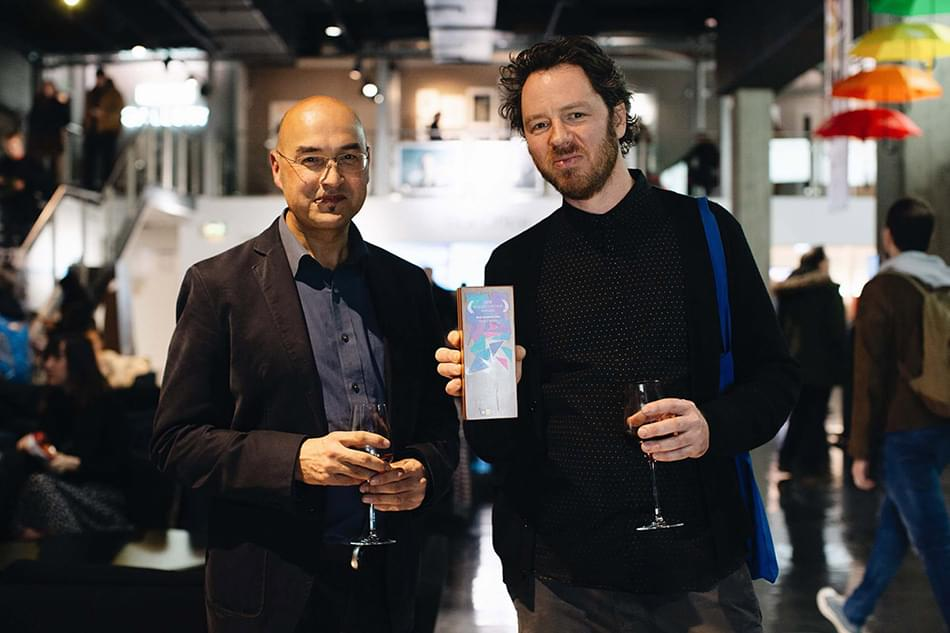
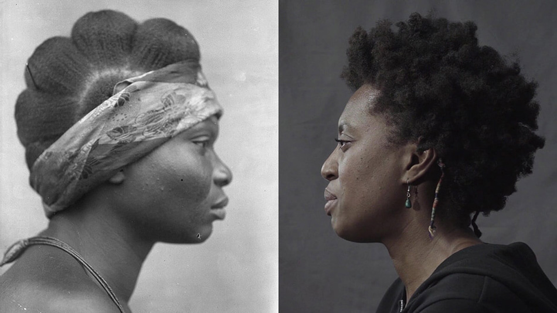
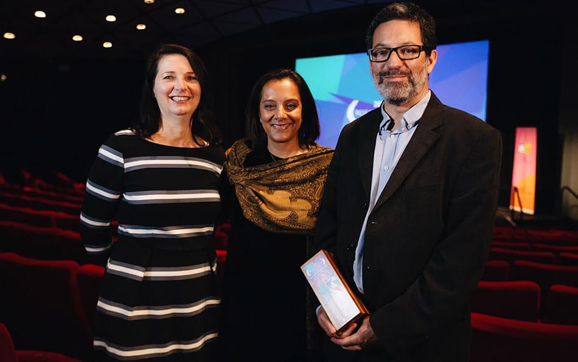
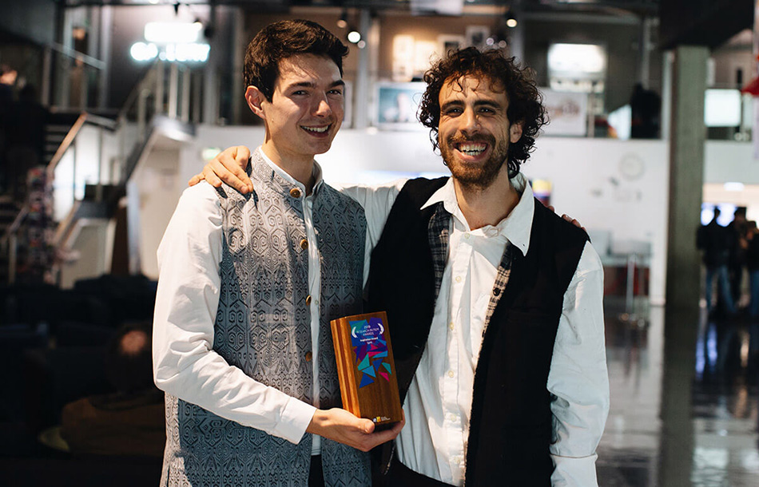

Team tpr had a great time on Tuesday night (12 November), at the BFI Southbank where the fifth annual Research in Film Awards organised by the Arts and Humanities Research Council (AHRC) took place. These are the only awards entirely dedicated to showcasing the breadth of research in arts and humanities through film and five winners were selected from hundreds of submissions and a strong short-list.
Judges included Chairman of ITV, Sir Peter Bazalgette, award-winning filmmaker, Kim Longinotto, and Steve Harding-Hill, Creative Director in Commercials and Short-form at Aardman Animations.
Left to Right: Paul Basu and Chris Allen – winners of Best Research Film Award © Thom Hobbs
Best Research Film went to Faces|Voices: the first-ever film to explore the controversial archive of Northcote Thomas from Nigeria and Sierra Leone (1909 – 1915). Northcote Thomas was the very first anthropologist to be appointed by the British Colonial Office though he was later fired.
In Faces | Voices, black women and men living in London – many originating from the same regions where Thomas worked – interpret the images of people from his photo archive through a 21st century lens. The archive has been unseen for over 100 years. Director Paul Basu (SOAS) writes about his research, and the making of Face | Voices here
Intranquilities: Voices from Haiti, winner of the Best Doctoral or Early Career Film look at the contemporary Haitian art scene. The moving and uplifting film features many Haitian artists, from writers to painters, poets to photographers, as they respond to ‘postcolonial disasters,’ such as the 2010 earthquake. We see that the spirit of defiance that led Haiti to becoming the first, and only, black-led republic, lives on in their art. You can see the trailer here
The Social Media Short Award went to the innovative Life on the Move – a stop motion animation exploring the complex reasons behind migration. Director Osbert Parker said 'Migration is not always traumatic or problematic; it can be a positive experience.'
The film features a particularly heart-warming story of a woman who travelled from Yemen to Somaliland and found a job in the coffee shop where she met her husband. "He came in for an Americano and left with my heart," she says. Life on the move features impressive 3D figurines of 2nd generation East Africans living in London, find out more about this here
Left to right: The team behind Golden Window, Mental Health and Wellbeing Award winner © Thom Hobbs
The awards included two public categories: The Mental Health and Wellbeing Award as well as the Inspiration Award. Three in 1,000 babies in Britain either die or become severely brain-damaged by lack of oxygen or blood flow to the brain around the time of birth. However, thanks to the ground-breaking research featured in The Golden Window – winner of the Mental Health and Wellbeing Award – there is hope for children and their families. The immersive film illustrates what doctors refer to as the 'cooling technique' which takes place during the first 72 hours of a child’s life leaving them in a state of stasis, and with the hope of saving their lives.
Left to right: Ross Harrison and Nicholas O’brien winners Inspiration Award © Thom Hobbs Create Studios
The Inspiration Award went to Spirit – a film which explores what it takes to feel at home in a remote Himalayan village. Spirit follows Saraswati, the first educated daughter-in-law to marry into the village 20 years ago and wondered how she could ever belong. Ross Harrison and Dr Jane Dyson worked together on the film to reveal that belonging cannot be assumed, but is the slow alchemy of work, friendship, love, loss and belief.
The amazing evening was hosted by writer and broadcaster, Danny Leigh and Jan Dalley, Arts Editor of the Financial Times, who initiated the awards, and chaired the judging panel. A huge congratulations to all the short-listed films, and to all the winners. Can’t wait until next year.